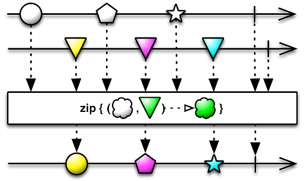

Android Room Database 立馬上手就看這篇 發表於 2021-02-20 更新於 2021-02-23 分類於 小唯的故事 ， Android 閱讀次數： Disqus： 所需閱讀時間 ≈ 12 分鐘 Android Room Database 是 Google 官方前幾年推出來的技術，官方也建議開發者使用 Room 而不直接使用 SQLite APIs。小唯的團隊也使用 Room 來取代原本的 SQLite 程式碼，中間遇到了不少大小問題，這篇小唯紀錄自己團隊使用 Room 的一些經驗，方便之後參照... 閱讀全文 »
Android Room Database 立馬上手就看這篇 發表於 2021-02-20 更新於 2021-02-23 分類於 小唯的故事 ， Android 閱讀次數： Disqus： 所需閱讀時間 ≈ 12 分鐘 Android Room Database 是 Google 官方前幾年推出來的技術，官方也建議開發者使用 Room 而不直接使用 SQLite APIs。小唯的團隊也使用 Room 來取代原本的 SQLite 程式碼，中間遇到了不少大小問題，這篇小唯紀錄自己團隊使用 Room 的一些經驗，方便之後參照... 閱讀全文 »
Android Clean Architecture - 仍然好用的架構 發表於 2021-01-28 更新於 2021-02-23 分類於 小唯的故事 ， Android 閱讀次數： Disqus： 所需閱讀時間 ≈ 5 分鐘 小唯的團隊使用 Clean Architecture 來重構自家的 Android 產品已經有一年多的時間。團隊從一開始毫無架構可言的 App，到最後完全重寫套用，中間歷經了許多甘苦，也收穫許多經驗。事後也證明（團隊一致認同），好的架構的確有效率的提升工作效率，以及程式的可擴展性等優點。所以小唯決定將使用經驗保留下來，也順道留一份模板程式，方便之後的產品更容易套用... 閱讀全文 »
Android 特效：RemoteViews 的應用和滿滿的坑 發表於 2020-12-28 更新於 2021-02-23 分類於 小唯的故事 ， Android 閱讀次數： Disqus： 所需閱讀時間 ≈ 15 分鐘 如何讓系統 UI 畫出客製化的 View，是小唯團隊最近一直在實驗的玩意。要在 Android 上面做到，就要使用 RemoteViews，通常第一次接觸到的開發者，都是經過 Google 搜尋如何實作某樣某樣功能，才間接找到 RemoteViews，然後就開始照著搜尋結果去做，接著就遇到許許多多問題，然後就是更多的 Google 搜尋，不斷的循環... 閱讀全文 »
Android 如何設計使用 Adaptive Icon 發表於 2020-12-21 更新於 2021-02-23 分類於 小唯的故事 ， Android 閱讀次數： Disqus： 所需閱讀時間 ≈ 4 分鐘 Adaptive icon 是自 Android 8 新增的 App icon 技術，支援相當多有趣的特效，雖然它已經上市一段時間，但是市面上支援的 App 仍然不多，當看到一個 App icon 不太對勁時，那大概就是沒未 adaptive icon 去量身定做。小唯的團隊雖然已經不是第一次使用，但是每隔一陣子請設計重畫新 icon 時，一開始總是會收到不符合格式的圖檔，小唯再三思考為什麼，終於發現應該是，Google 的文件問題... 閱讀全文 »
RxJava 特效：API 搭配 zip 的妙用 發表於 2020-12-15 更新於 2021-02-23 分類於 小唯的故事 ， Android 閱讀次數： Disqus： 所需閱讀時間 ≈ 3 分鐘 接近年底的這一個月，小唯團隊的工程們正忙著串接公司新的 API。新開的 API 不像是以往團隊所熟悉的，以一個畫面一支 API 為基礎的模式，反而會有一個畫面需要多支 API 相互組成狀況，在這種條件下，API 使用的時機就變得更有意思了... 閱讀全文 »
Android 特效：動態變更標籤元件(TabLayout) 發表於 2020-12-10 更新於 2021-02-23 分類於 小唯的故事 ， Android 閱讀次數： Disqus： 所需閱讀時間 ≈ 4 分鐘 電腦前，小唯不斷地調整程式碼，重複編譯，檢查模擬器上的結果，一整個上午小唯一直在試一個 Android 標籤元件的特效（Tab 特效）- 動態新增新的標籤頁，及移除現有的標籤頁。這問題已經困擾小唯一段時間了，原本以為是個很簡單的效果，一個上午絕對可以搞定，但卻在最後一步，怎麼試效果都不正確，標籤頁雖然可以新增或移除，但標籤頁的內容卻怪怪地... 閱讀全文 »
「后翼棄兵」是如何說故事 - 靶心人公式 發表於 2020-12-06 更新於 2021-02-23 分類於 老皮的故事 ， 讀書心得 閱讀次數： Disqus： 所需閱讀時間 ≈ 3 分鐘 最近很火熱的 Netflix 影集「后翼棄兵」，老皮終於也在週末時趁有空時，看完了整部劇。說來也剛好，老皮最近也讀了許榮哲老師的「3分鐘說18萬個故事」，所以影集一結束，老皮立刻拿起紙筆，試著將故事課中的技巧，針對影片去做一個分析，迫不及待的想驗證，如此好看的影集，是不是也都是所謂的套路... 閱讀全文 »
Android 特效：底部滑出視窗 發表於 2020-12-03 更新於 2021-02-23 分類於 小唯的故事 ， Android 閱讀次數： Disqus： 所需閱讀時間 ≈ 9 分鐘 小唯的老闆，今天拿了自己的 iPhone 手機過來，問道：「幫我看看，這是怎麼做的。」小唯探過頭去，老闆手機上開著 LINE，一篇對話視窗內，其中一則對話內容是個連結 `line://app/xxxxxxxxxx`。老闆點了連結，app 底部跳出一個繪圖區，看起來 LINE 很不搭，不像是原生的功能，接著看著老闆在繪圖區畫了畫，點選送出，剛畫完的作品就貼到了對話視窗內... 閱讀全文 »
App 命名與取口號的哲學 發表於 2020-11-29 更新於 2021-02-23 分類於 老皮的故事 ， 讀書心得 閱讀次數： Disqus： 所需閱讀時間 ≈ 2 分鐘 2006，作家艾爾特與奧本海默教授，這兩位進行了一項有趣的實驗，他們分析了紐約證交所和美國證交所在 1990 - 2004 年間，新掛牌上市的公司股票。實驗發現，一間公司股票的剛上市價格，竟然跟它上市的名稱代號有相關性。儘管股票的價格回逐漸回歸市場機制，但名稱較容易發音的公司，股價表現優於那些較難發音的公司... 閱讀全文 »